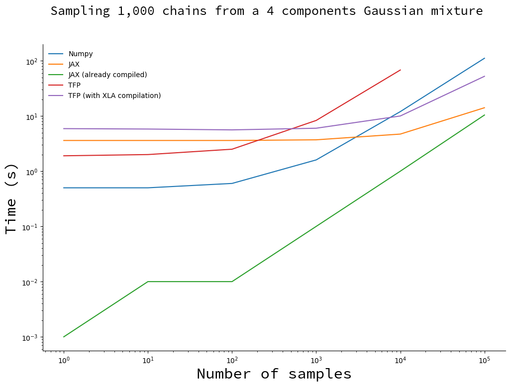
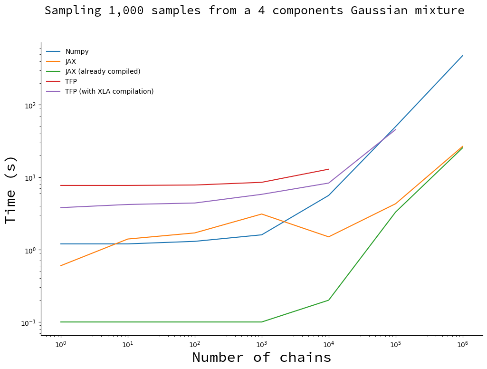

Massively parallel MCMC with JAX
TL;DR
Edit on 2020/10/01: As pointed out by Matthew Johnson and Hector Yee, the results reported in a previous version of this post were artificially biaised in favor of JAX due to my code not "advancing" the random number generator. I updated all curves and numbers, and added a little word of caution regarding the use of JAX's pseudo-random number generator.
JAX blows everyone out of the water, by up to a factor of 20 in extreme cases (1,000 samples with 1,000,000 chains). Numpy wins in the small number of samples, small number of chains regime due to JAX's JIT compilation overhead. I report results for tensorflow probability (TFP), but keep in mind the comparison is unfair since its implementation of random walk metroplis includes more bells and whistles than ours.
The code necessary to reproduce the results can be found here. Tips to make the code run faster are appreciated. I currently only care about getting the last sample of each chain; the number of iterations will eventually be dynamic and I want to avoid pre-allocating too much memory.
Vectorized MCMC
Colin Carroll recently wrote an interesting blog post that uses Numpy and a vectorized version of the random walk metropolis algorithm (RWMH) to generate a large number of samples. Running multiple chains at once is used to performing posterior checks on the convergence of algorithms. It was traditionally achieved by running one chain per thread on a multithreaded machine, in Python using joblib or a custom backend. It is cumbersome, but it does the job.
Colin's post got me very excited about the possibility to sample thousands, millions of chains in parallel with little added cost. He details a couple of possible applications in his post, but I have the gut feeling that there is something bigger waiting around the corner. But this is or another post.
Around the same time I stumbled upon JAX. JAX seems interesting in the context of Probabilistic Programming Languages for several reasons:
- It is in most cases a drop-in replacement for Numpy, and Numpy is known for its simple, clean interface (in most cases, don't jump on me here);
- Autodiff is plain simple (Hello, Hamiltonian Monte Carlo!);
- Its forward differentiation mode allows to easily compute higher-order derivatives easily;
- JAX performs JIT compilation using XLA which accelerates your code, even on CPU;
- Using GPUs and TPUs is straightforward;
- This is a matter of taste, but it favours a functional style of programming.
Before diving right in and implementing a framework with JAX, I wanted to do a little benchmaking to get an idea of what I am signing up for. Here I will be comparing:
- Numpy
- Jax
- Tensorflow Probability (TFP)
- Tensorflow Probability with XLA compilation
Notes about benchmarking
Before giving the results, a few words of caution:
- The reported times are the average of 10 runs on my laptop, with nothing
other than the terminal open. For all but the post-compilation JAX runs,
the times were measured with the
hyperfinecommand line tool. - My code is probably not optimal, especially for TFP. I would appreciate tips to make the codes faster.
- The experiments are performed on CPU. JAX and TFP can run on GPU/TPU so expect additional acceleration there.
- For Numpy and JAX the sampler is a generator and the samples are not kept in memory. This is not the case for TFP thus the computer runs out of memory during large experiments.
- Number of samples per second is not the metric that matters in probabilistic programming, but rather the number of effective samples you get per second. The latter is more of a matter of the algorithm you are using; this benchmark is still a good indication of the raw performance of the different frameworks.
Setup and results
I am sampling an arbitrary Gaussian mixture with 4 components. Using Numpy:
import numpy as np from scipy.stats import norm from scipy.special import logsumexp def mixture_logpdf(x): loc = np.array([[-2, 0, 3.2, 2.5]]).T scale = np.array([[1.2, 1, 5, 2.8]]).T weights = np.array([[0.2, 0.3, 0.1, 0.4]]).T log_probs = norm(loc, scale).logpdf(x) return logsumexp(np.log(weights) + log_probs, axis=0)
Numpy
Colin Carroll's MiniMC has the simplest and most readable implementations of Random Walk Metropolis and Hamiltonian Monte Carlo I have seen. My Numpy implementation is an iteration upon his:
import numpy as np def rw_metropolis_sampler(logpdf, initial_position): position = initial_position log_prob = logpdf(initial_position) yield position while True: move_proposals = np.random.normal(0, 0.1, size=initial_position.shape) proposal = position + move_proposals proposal_log_prob = logpdf(proposal) log_uniform = np.log( np.random.rand(initial_position.shape[0], initial_position.shape[1]) ) do_accept = log_uniform < proposal_log_prob - log_prob position = np.where(do_accept, proposal, position) log_prob = np.where(do_accept, proposal_log_prob, log_prob) yield position
JAX
Let us unpack the JAX implementation. The kernel is very similar to Numpy's:
from functools import partial import jax import jax.numpy as np @partial(jax.jit, static_argnums=(1,)) def rw_metropolis_kernel(rng_key, logpdf, position, log_prob): key, subkey = jax.random.split(rng_key) """Moves the chain by one step using the Random Walk Metropolis algorithm. Attributes ---------- rng_key: jax.random.PRNGKey Key for the pseudo random number generator. logpdf: function Returns the log-probability of the model given a position. position: np.ndarray, shape (n_dims,) The starting position. log_prob: float The log probability at the starting position. Returns ------- Tuple The next positions of the chains along with their log probability. """ move_proposals = jax.random.normal(key, shape=position.shape) * 0.1 proposal = position + move_proposals proposal_log_prob = logpdf(proposal) log_uniform = np.log(jax.random.uniform(subkey)) do_accept = log_uniform < proposal_log_prob - log_prob position = np.where(do_accept, proposal, position) log_prob = np.where(do_accept, proposal_log_prob, log_prob) return position, log_prob
There are a few things to note here:
jax.numpyacts as a drop-in replacement tonumpy. For functions that only involve array operations, replacingimport numpy as npbyimport jax.numpy as npshould already give you performance benefits.- We need to help JAX's compiler a little bit by indicating which arguments are
not going to change when the function is run several times:
@partial(jax.jit, argnums=(1,)). This is compulsory if you pass a function as an argument, and can enable further compile-time optimizations. - The kernel is written for a single chain. Keep reading for an explanation.
Finally, and most importantly, JAX handles pseudo-random number generator in a
very specific way and this can be tricky to grasp at first. Notice the line
key, subkey = jax.random.split(rng_key). What this line does is return the
original key, and subkey which is original key "advanced" one step. **If you
do not use split you will get a constant value instead of pseudo-random
numbers.** Please do read the PRNG section in the [Gotcha man page](). I
completely missed this in the previous version of this benchmark, and the
performance that I reported where grossly optimistic.
We will use vmap below to
vectorize the function. It allows a very neat conceptual separation: a
transition kernel advances a chain; it should be the rest of the code's
responsibility to make kernels run in parallel.
The first thing to notice is that the function is written as if there only was a single chain.
If you are familiar with Numpy, the syntax should feel very familiar to you. There are a few differences:
- JAX handle random number generation differently from other Python packages, for very good reasons (read it!). Every distribution takes a PRNG key as an input.
- I extracted the kernel from the sampler because JAX cannot compile
generators (or can it?). So we extract and JIT the function that does all the
heavy lifting:
rw_metropolis_kernel.
Tensorflow Probability
For TFP we use the Random Walk Metropolis algorithm implemented in the library:
from functools import partial import numpy as np import tensorflow as tf import tensorflow_probability as tfp tfd = tfp.distributions def run_raw_metropolis(n_dims, n_samples, n_chains, target): samples, _ = tfp.mcmc.sample_chain( num_results=n_samples, current_state=np.zeros((n_dims, n_chains), dtype=np.float32), kernel=tfp.mcmc.RandomWalkMetropolis(target.log_prob, seed=42), num_burnin_steps=0, parallel_iterations=8, ) return samples run_mcm = partial(run_tfp_mcmc, n_dims, n_samples, n_chains, target) ## Without XLA run_mcm() ## With XLA compilation tf.xla.experimental.compile(run_mcm)
Results
We have two degrees of freedom: the number of samples and the number of chains. While the first relies on raw number crunching power, the second also relies on the way vectorization is implemented. I thus decided to benchmark algorithm on both dimensions.
I consider the following cases:
- The Numpy implementation;
- The JAX implementation;
- The JAX implementation to which I subtract the compilation time. This is a hypothetical situation, just to show the improvement brought by compilation.
- Tensorflow Probability;
- Tensorflow Probability with the experimental XLA compilation.
Draw an increasing number of samples with 1,000 chains
We fix the number of chains and make the number of samples vary.

You will notice the missing point for TFP implementation. Since the TFP algorithm stores all the samples, it runs out of memory for large numbers of samples. This did not happen with the XLA-compiled version, probably because it uses more memory-efficient data structures.
For less than 1,000 samples the vanilla TFP and Numpy implementation are faster than their compiled counterparts. This is due to the compilation overhead: when you subtract the compilation time for JAX (thus obtaining the green curve), it becomes faster by a large margin. Only when the number of samples becomes large and the total sampling time is dominated by the time it takes to draw samples do you start to reap the benefits of compilation.
There is no magic: JIT compilation implies a noticeable, but constant, computation overhead.
I would recommend to go with JAX in most cases. Sampling in .3 seconds instead of 3 seconds only matters when this difference is going to be compounded by executing the same piece of code more than ten times. However, compilation is something that only need to happen once; in this case the investment will be paid off before you reach 10 iterations. For all practical purposes, JAX wins.
Draw 1,000 samples with an increasing number of chains
Here we fix the number of samples and make the number of chains vary.

JAX is still a clear winner: it is faster than Numpy as soon as the number of chains reaches 10,000. You will note that there is a bump on the JAX curve, that is entirely due to compilation (the green curve does not have this bump). I do not have an explanation why, so ping me if you have the answer!
Here's the mind-blowing highlight:
JAX can generate a billion samples in 25s on CPU. 20 times faster than Numpy.
Conclusion
For something that allows us to write code in pure python, JAX's performance is incredible. Numpy still is a decent contender, especially for the smaller numbers where most of JAX's execution time is spent compiling.
However, Numpy is not suitable for a Probabilistic Programming Language. The implementation of efficient sampling algorithms like Hamiltonian Monte Carlo requires to compute the gradient of the probability density functions. JAX, however, between its performance and autodiff capabilities, has all it takes. No wonder Uber's team started working with JAX on Numpyro.
Don't read too much in Tensorflow Probability's poor performance. When it comes to sampling from a distribution, what matters is not raw speed, but the number of effective samples per second. TFP's implementation includes more bells and whistles, and I would expect it to be way more competitive in terms of effective number of samples per second.
Finally, note that it is way easier to scale by multiplying the number of chains than the number of samples. We don't know what to do with those chains yet, but I have the gut feeling that once we do, probabilistic programming will have another breakthrough.